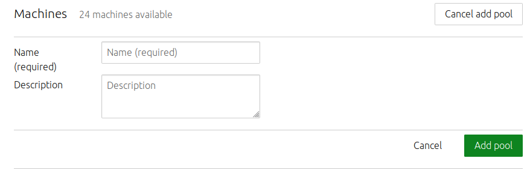

Resource pools
Resource pools allow administrators to logically group resources (machines and VM hosts) into pools. Pools can help you budget machines for a particular set of functions. For example, if you’re using MAAS to manage a hospital data centre, you may want to keep a certain number of machines reserved for provider use, whether that be for the charts, documentation, or orders application. You can use resource pools to reserve those machines, regardless of which of the three applications you end up loading onto a particular machine at any given time.
Quick questions you may have:
- How can I add a resource pool?
- How can I delete a resource pool?
- How do I add a node to a resource pool?
- How do I remove a node from a resource pool?
- How do I add a VM host to a resource pool?
- How do I remove a VM host from a resource pool?
Administrators can manage resource pools on the Machines page in the web UI, under the Resource pools tab. Also note that all MAAS installations have a resource pool named “default.” MAAS automatically adds new machines to the default resource pool.
Add a resource pool
Use the Add pool button to add a new resource pool.
After giving your new pool a name and description, click the Add pool button:

Deleting a resource pool
To delete a resource pool, click the trashcan icon next to the pool.

[note] If you delete a resource pool, all machines that belong to that resource pool will return to the default pool. [/note]
Add a machine to a resource pool
To add a machine to a resource pool, on the Machines page, select the machine you want to add to the resource pool. Next, select the Configuration tab. Now select the resource pool and click the Save changes button.

Removing a machine from a resource pool
To remove a machine from a resource pool, follow the same procedure you would use to add a machine, but select “default” as the new resource pool. This action will return the machine to the default resource pool.
Add a VM host to a resource pool
You can add a VM host to a resource pool when you create a new VM host, or you can edit a VM host’s configuration:

Removing a VM host from a resource pool
To remove a VM host from a resource pool, follow the same procedure you would use to add a VM host to a resource pool, except select “default” as the new resource pool. This action will return the machine to the default resource pool.